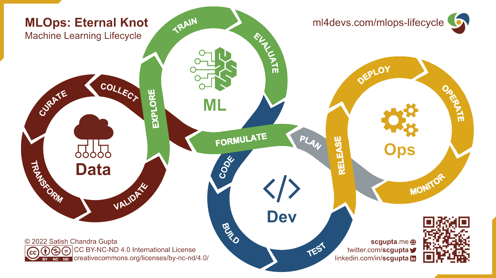

Besoins techniques et organisationnels
BCEAO - Jour 2
25 septembre 2023
Introduction
L’informatique dans le SSP
- Une “communauté d’artisans”
- Diversité des langages de programmation
- Diversité des environnements de travail
Le poste de travail
- Avantages :
- Simplicité
- Inconvénients :
- Puissance limitée
- Reproductibilité limitée
- Sécurité faible
Les infrastructures mutualisées traditionnelles
- Avantages :
- Simplicité
- Puissance
- Sécurité des données
- Couvre la majorité des usages
- Inconvénients :
- Reproductibilité faible
- Difficultés à innover
L’enjeu de la reproductibilité

Source : Peng R., Reproducible Research in Computational Science, Science (2011)
Donner les moyens d’innover
- Fournir des ressources adaptées aux nouveaux usages
- Stockage adapté aux données massives et non-structurées
- Outils modernes de data science (R, Python, calcul distribué,…)
- GPUs pour l’entraînement de modèles de machine learning
- Passer du développement à la mise en production
- Outils de déploiement et d’automatisation
Des besoins à différents niveaux
Infrastructure
Outils informatiques
Changements organisationnels
Infrastructure
Notre data stack
Infrastructure cloud centralisée
Stockage objet
Conteneurisation
Plateforme web de data science
Infrastructure cloud
- Poste de travail comme point d’accès à une infrastructure centralisée de calcul
- Evolutivité (scaling horizontal)
- Sécurité (pas de dissemination des données)
- On-premise vs. full-cloud
- Maîtrise des coûts
- Compétences de maintenance
Stockage : le data lake
- Un stockage peu coûteux fait pour des données
- volumineuses
- brutes
- issues de sources variées
Le choix du stockage objet
Choix du stockage objet (type S3) vs. Hadoop
La co-localisation des traitements n’est plus justifiée
- Plus besoin de puissance/IA que de big storage
- Découplage stockage/traitement -> évolutivité
- Coûts de maintenance
Le choix de la conteneurisation
- Standard pour la data science
- autonomie
- reproductibilité
- scalabilité
- Orchestrateur : Kubernetes
Une plateforme de data science
- Les choix techniques ne suffisent pas
- Les technologies cloud sont difficiles d’accès
- Une interface web comme liant technique
SSP Cloud / Onyxia
- SSP Cloud : instance publique d’Onyxia
- Dédiée à l’expérimentation sur données ouvertes
- Base des tutoriels de cette formation
- Onyxia : une plateforme de data science moderne
- Projet open-source : https://github.com/InseeFrLab/onyxia-web
- Possibilité de créer une instance interne
Outils informatiques
Motivation
Une infrastructure adaptée au big data est nécessaire.. mais pas suffisante !
Nécessité d’adapter les pratiques
- Langages de programmation
- Formats de données
- Librairies informatiques spécifiques
Langages de programmation
Limites des formats de données usuels
- Les formats usuels (CSV, JSON, XML) sont inadaptés à la big data
- Non-compressés : human readable mais espace disque élevé
- Orientés ligne : un traitement sur une/des colonne(s) implique une lecture complète du fichier
Formats de données pour la big data
- Propriétés souhaitées
- Orientés colonne
- Efficients en stockage disque
- Efficients en RAM
- Interopérables et open-source
- Formats candidatsd
Parquet: stockage disqueArrow: traitement en mémoire
Modes de stockage
- Le stockage hybride optimise la lecture
- Projection (
SELECT) : orientation colonne - Predicates (
WHERE) : orientation ligne
- Projection (
Le format Parquet
- Orienté colonne (hybride)
- Adapté aux traitements analytiques
- Conçu pour être écrit une fois mais lu fréquemment
- Optimisé
- Compression (jusqu’à 87 % moins d’espace qu’un CSV)
- Parcours du fichier (jusqu’à 34x plus rapide qu’un CSV)
- Interopérable et open-source
Traitement en mémoire
Parquetne résout pas tout- L’espace disque est optimisé
- Les données décompressées doivent passer en RAM
- Comment analyser 100 GB de données sur un PC avec 16 GB de RAM ?
Arrow
- Format de données en mémoire, orienté colonne
- Optimisé pour les traitements analytiques
- Pas nécessaire de charger toutes les données en RAM
- Interopérable et standardisé

Traitement des données massives
Arrowne résout pas tout- Les données massives nécessitent des infrastructures big data
- Les algorithmes aussi doivent être adaptés
- Solution : calcul distribué
Hadoop MapReduce
Développé par Google (2004)
Popularisé par l’implémentation open-source d’Hadoop
Apache Spark
- Démocratisation du calcul distribué
- Abstraction des opérations MapReduce
- Vitesse d’exécution ++ (RAM vs. disque)

Outils pour la mise en production
- Traitements automatisés (workflows)
argo-workflow
- Déploiement (batch, workflow, application)
KubernetesArgoCD
En résumé
Utiliser un format de données adapté (
Parquet)Utiliser des outils informatiques adaptés
- Données volumineuses : calcul en mémoire optimisé (
Arrow/DuckDB) - Données massives : calcul distribué (
Spark)
- Données volumineuses : calcul en mémoire optimisé (
Catalogue de services d’Onyxia
Organisation et compétences
Labs
- L’innovation méthodologie ET informatique sont complémentaires
- Pas de big data sans infrastructure adaptée
- Pas de big data sans outils et algorithmes adaptés
- Insee : deux labs qui travaillent en synérgie
- SSP Lab : innovation méthodologique en data science
- DIIT : innovation informatique (Onyxia / SSP Cloud)
Approche MLOps
- Besoin de trouver des organisations hybrides

Organisation d’un projet
Formation
- Toutes nos formations sont open-source (catalogue)
- Parcours de formation à R / Python
- Formation à Spark
- Tutoriels de Machine Learning
- Mise en production
- etc.
Conclusion
- Donner les moyens d’innover
- Une infrastructure moderne est primordiale
- Adopter une organisation souple favorisant l’autonomie
- Investir dans la formation
- Adopter les bonnes pratiques de développement
- Formats de données et librairies logicielles adaptés
- Passer de l’expérimentation à la production
Comment construire une data stack pertinente ?